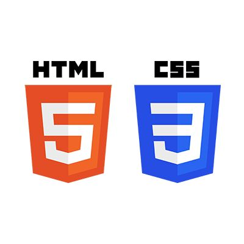

CLERC Dimitri
Bienvenue sur mon portfolio !
Salut, moi c'est Dimitri Clerc 👋
Je suis actuellement étudiant au lycée Louis Pergaud 🗺️ en première année de BTS SIO (Services Informatiques aux Organisations) dans l'option SISR (Solutions d'Infrastructure, Systèmes et Réseaux) 💻
Actuellement en cours d'étude 🎓, je vous propose sur ce portfolio de découvrir les différentes études et projets professionnels que j'ai pu entreprendre au sein de ma formation.
Qu'est-ce que le BTS SIO ? 🎓
Le Brevet de Technicien Supérieur aux Services Informatiques aux Organisations (BTS SIO) s'adresse à ceux qui souhaitent se former en deux ans aux métiers d'administrateur réseau ou de développeur. Cela permet d'intégrer directement le marché du travail ou de continuer des études dans le domaine de l'informatique.
Les deux spécialités du BTS SIO :
Option SISR
L'option Solution d'Infrastructure, Systèmes et Réseaux forme des professionnels des réseaux et équipements informatiques (installation, maintenance, sécurité). En sortant d'un BTS SIO SISR, vous serez capables de gérer et d'administrer le réseau d'une entreprise et d'assurer sa sécurité et sa maintenance.
Exemples de métiers :
- Administrateur réseau
- Technicien d'infrastructure
- Support et déploiement
- Pilote d'exploitation
- Technicien micro et réseaux
- Technicien de production
Option SLAM
L'option Solutions Logicielles et Applications Métiers (SLAM) forme des spécialistes du développement d'applications, de la conception à la maintenance. Elle prépare à créer, tester et déployer des solutions logicielles adaptées aux besoins des entreprises.
Exemples de métiers :
- Développeur d'applications
- Développeur web / mobile
- Analyste programmeur
- Intégrateur d'applications
- Concepteur-développeur
- Ingénieur logiciel
Accéder à mon CV
Retrouvez mon CV détaillé avec mon expérience, ma formation et mes compétences.
📄 Télécharger mon CVCertifications & Attestations
Les certifications ont été acquises durant mes études en BTS SIO et d'autres par ma propre initiative en essayant de mettre en place des solutions. J'ai également relevé les défis organisés, ce qui permet d'effectuer des recherches et aller encore plus loin.
Attestation ANSSI
📋 Voir l'attestation ANSSIAttestation PIX
📋 Voir l'attestation PIXProjets Réalisés
🌐 Configuration d'une Architecture Réseau avec VLANs
Projet collaboratif - BTS SIO SISR
📋 Contexte & Objectifs
Ce projet fil rouge s'inscrit dans la formation BTS SIO option SISR (Solutions d'Infrastructure, Systèmes et Réseaux). L'objectif était de concevoir et déployer une architecture réseau d'entreprise composée de 5 services distincts avec des sous-réseaux et VLANs ségrégués, incluant un routeur interVLAN et un serveur DHCP.
Travail réalisé en collaboration avec : HEUBERGER Mathieu, GARNIER Hélory
💡 Compétences Mobilisées
- Conception d'infrastructure réseau : Plan d'adressage, plan de VLANs, segmentation réseau
- Configuration de switches Cisco : Création de VLANs, configuration des ports en mode access/trunk
- Routage inter-VLAN : Configuration d'un routeur niveau 3 pour communications entre VLANs
- Services réseau : Déploiement et configuration d'un serveur DHCP
- Sécurité réseau : Autorisation VLAN sur les ports trunk, segmentation des flux
- Documentation technique : Rédaction d'un compte-rendu détaillé avec schémas et justifications
- Outils utilisés : PuTTY, Cisco Packet Tracer, interface Web NETGEAR ProSafe
🏗️ Architecture Mise en Place
5 VLANs créés :
⚙️ Étapes de Configuration
-
Création des VLANs sur le switch Cisco :
Utilisation de PuTTY en connexion serial pour créer 5 VLANs avec leurs identifiants et noms respectifs via les commandes Cisco.
-
Configuration des ports en mode access :
Attribution des ports du switch à chaque VLAN (4 ports par service) avec mode access pour isoler le trafic.
-
Configuration des ports trunk :
Mise en place des ports trunk (Fa0/21-24, Gi0/1-2) avec autorisation pour tous les VLANs, permettant la transmission des trames étiquetées.
-
Configuration du routeur Cisco niveau 3 :
Accès via interface Web NETGEAR ProSafe (192.168.1.1), création de profils VLAN avec adresses IP de passerelle et masques réseau spécifiques.
-
Déploiement du serveur DHCP :
Configuration du DHCP pour chaque VLAN avec plages d'adresses IP (ex: 192.168.100.2-61 pour VLAN 110) et activation du routage inter-VLAN.
-
Tests et vérification :
Vérification de la configuration DHCP sur les clients Windows avec ipconfig /release et ipconfig /renew pour valider l'attribution d'adresses.
📚 Compétences du Référentiel BTS SIO SISR
Conception et mise en place d'une infrastructure réseau fonctionnelle
Segmentation réseau par VLANs, contrôle d'accès aux ports, autorisation sur les trunks
Configuration du routage inter-VLAN et du DHCP pour la disponibilité réseau
Vérification et test de la configuration réseau au niveau utilisateur
Rédaction d'un compte-rendu détaillé avec glossaire et justifications
📦 Livrables & Documentation
✅ Résultats & Conclusions
Résultats obtenus :
- ✓ 5 VLANs créés et correctement configurés sur les switches
- ✓ Isolation du trafic réseau par VLAN assurée
- ✓ Communications inter-VLANs fonctionnelles via le routeur niveau 3
- ✓ Serveur DHCP en production - attribution automatique d'adresses validée
- ✓ Architecture sécurisée et segmentée répondant aux besoins d'une PME/ETI
- ✓ Documentation complète et compte-rendu professionnel produits
Apprentissages clés : Ce projet a permis de maîtriser les aspects fondamentaux de l'administration réseau en environnement professionnel, notamment la segmentation logique des réseaux, la gestion des adresses IP, et les protocoles de routage. Les défis rencontrés (configuration des masques réseau, autorisation VLAN sur trunks) ont renforcé les compétences en troubleshooting et en documentation technique.
⚙️ Automatisation des réservations et des conventions du Tiers-Lieu Jeunesse
Projet réalisé en stage - InfosJeunes / CRIJ Bourgogne-Franche-Comté
📋 Contexte & Objectifs
Durant mon stage chez InfosJeunes - CRIJ, j'ai contribué à la modernisation du processus de réservation du Tiers-Lieu Jeunesse. L'ancien fonctionnement reposait sur la ressaisie manuelle des informations dans une convention, puis sur sa conversion et son envoi par courriel.
L'objectif était de fluidifier le parcours des usagers, de fiabiliser les données et de supprimer les tâches répétitives grâce à une chaîne entièrement numérique. La mission a été réalisée sur deux semaines, en autonomie pour l'analyse et le développement, avec l'accompagnement d'Imed, responsable opérationnel du Tiers-Lieu.
🧩 Solution technique mise en place
- Modélisation : création du formulaire et du modèle Google Docs avec des balises comme
{{Nom}},{{Prenom}},{{Date}}et{{Email}} - Automatisation : création d'un déclencheur
onFormSubmitlié à la feuille Google Sheets - Génération documentaire : duplication du modèle, remplacement des balises et conversion en fichier PDF
- Communication : envoi automatique du PDF par e-mail au demandeur et à l'équipe encadrante
💡 Compétences BTS SIO mobilisées
Administration des accès et exploitation des services collaboratifs Google Workspace en mode SaaS.
Conception d'une réponse technique durable adaptée aux contraintes des utilisateurs du Tiers-Lieu.
Amélioration de l'interaction numérique entre les usagers et le service administratif.
✅ Tests, accompagnement & résultats
- ✓ Correction des problèmes de sensibilité à la casse et des espaces insécables dans les balises
- ✓ Génération fiable d'une convention personnalisée au format PDF
- ✓ Notification immédiate du demandeur et archivage par copie e-mail
- ✓ Démonstration réalisée avec Imed sur le suivi du tableur et la gestion des erreurs
- ✓ Déploiement réalisé dans le délai prévu de deux semaines
Le code source JavaScript a été structuré et documenté afin de faciliter sa maintenance, l'ajout de nouvelles variables et la modification des clauses de la convention.
📦 Livrables
Création d'une Infrastructure Réseau (Projet Collaboratif)
Projet incluant la conception d'une infrastructure réseau, cahier des charges, liste de matériel et documentation technique.
📊 Voir le diaporama du projetCompétences
Langages de Programmation 👨💻
Toutes ces connaissances ont été acquises de différentes façons : lors de mes études en BTS SIO et par ma propre initiative en essayant de mettre en place des solutions. J'ai également relevé les défis organisés, ce qui permet d'effectuer des recherches et aller encore plus loin.
- HTML/CSS
- Python
- PHP
- JavaScript

Outils et Logiciels ⚙️
- Premiere Pro
- After Effects
- Photoshop
- Cisco Packet Tracer
- Suite Office (Word, Excel, PowerPoint)
Contact & Réseaux
📧 Email : dimitriclerc4@gmail.com
📞 Téléphone : 06 47 60 66 34
📍 Localisation : Besançon, Bourgogne-Franche-Comté
💻 GitHub : /DimitriC11